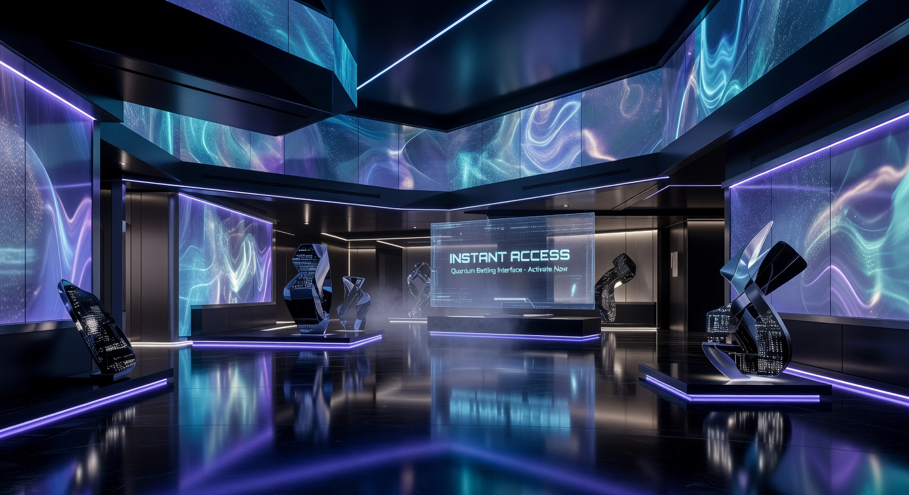
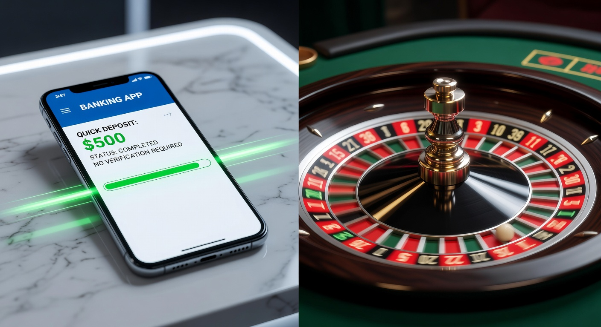
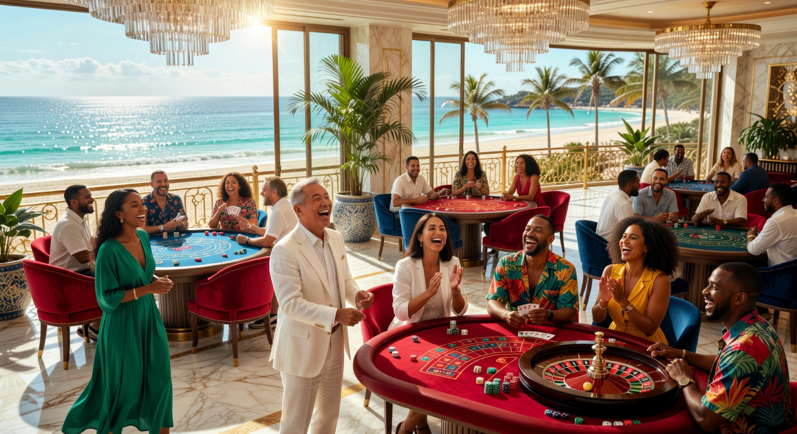
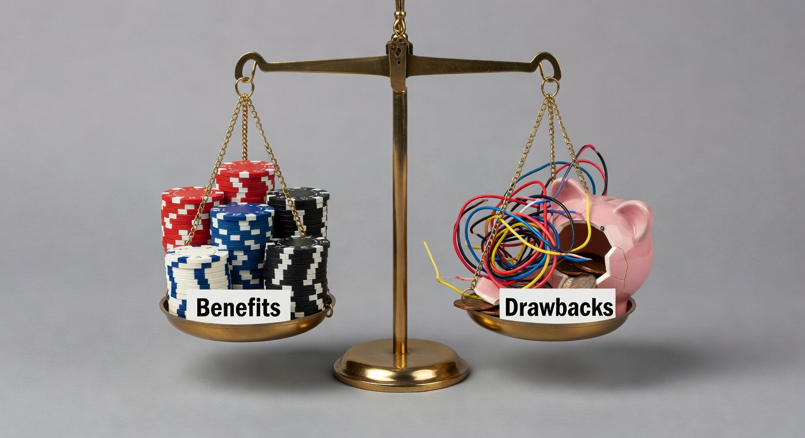

Nieuwe Casino Zonder Registratie: Direct Spelen in 2026
De wereld van het digitale gokken is in 2026 fundamenteel veranderd. Waar spelers vroeger minutenlang bezig waren met het invullen van formulieren en het uploaden van paspoorten, is de drempel nu vrijwel volledig verdwenen. Een nieuwe Casino Zonder Registratie biedt de moderne gokker de mogelijkheid om binnen zestig seconden aan de slag te gaan bij een top-platform. Deze innovatieve benadering, vaak aangedreven door geavanceerde banktechnologieën, combineert veiligheid met een ongekende snelheid.
In Nederland is de vraag naar dit type online casino explosief gestegen. Spelers waarderen hun privacy en willen niet langer dat hun persoonlijke gegevens op talloze servers worden opgeslagen. Door gebruik te maken van een nieuwe Casino Zonder Registratie wordt de identificatie afgehandeld via uw eigen vertrouwde bankomgeving, wat het risico op datalekken minimaliseert. In dit uitgebreide artikel duiken we diep in de trends van 2026 en laten we zien waarom deze trend de toekomst van de industrie is.
Het landschap van het nieuwe online casino is competitiever dan ooit. Aanbieders proberen elkaar te overtreffen met betere spellen, snellere uitbetalingen en vooral meer gebruiksgemak. Voor wie op zoek is naar een nieuwe online casino echt geld ervaring, zijn de registratieloze opties vaak de meest efficiënte keuze. We hebben de markt geanalyseerd om u te voorzien van de meest actuele informatie over veiligheid, bonussen en de beste platforms van dit jaar.
Beste Nieuwe Online Casino's Zonder Registratie Beoordeeld
Om u te helpen bij het maken van een keuze, hebben onze experts de top 5 platforms van 2026 op een rij gezet. Deze goksites blinken uit in snelheid, betrouwbaarheid en hun spelaanbod. Elk van deze opties vertegenwoordigt een nieuwe Casino Zonder Registratie die voldoet aan de strengste internationale standaarden.
| Casino | Belangrijkste Kenmerk | Bonus (2026) | Speel Nu |
|---|---|---|---|
| Goldbet | Grootste selectie slots | 100% tot €500 | Bezoek Goldbet |
| Newlucky | Beste mobiele ervaring | Dagelijkse Cashback | Bezoek Newlucky |
| Dragobet | Uitstekende sportweddenschappen | €200 Free Bet | Bezoek Dragobet |
| Fortunicabet | Snelste uitbetalingen | 200 Gratis Spins | Bezoek Fortunicabet |
| Spinorhino | Uniek loyaliteitsprogramma | Tot €1000 Bonus | Bezoek Spinorhino |
Goldbet is momenteel de marktleider als we kijken naar de technologische integratie. Dit platform maakt gebruik van de nieuwste encryptie om transacties direct te verwerken. Als een casino dat zich richt op zowel veteranen als nieuwkomers, biedt het een interface die intuïtief en snel is. Hun samenwerking met providers zoals NetEnt en Pragmatic Play garandeert een hoogwaardige spelervaring.
Voor diegenen die liever op hun smartphone spelen, is Newlucky een fantastische nieuwe Casino Zonder Registratie. Het platform is "mobile-first" ontworpen, wat betekent dat de navigatie en de spellen vloeiend werken op elk schermformaat. De dagelijkse cashback-optie is een grote trekpleister voor spelers die van consistentie houden. Het is een prachtig voorbeeld van hoe een modern een online platform zou moeten functioneren.
Onze Criteria voor het Selecteren van Top Goksites
Bij het beoordelen van een nieuwe Casino Zonder Registratie kijken we verder dan alleen de buitenkant. Veiligheid is onze absolute prioriteit. We controleren of het platform beschikt over geldige licenties van gerenommeerde autoriteiten zoals de MGA of internationale toezichthouders. Zonder een solide licentie komt een site niet op onze lijst terecht.
Daarnaast testen we de snelheid van de uitbetalingen. In 2026 verwachten we dat winsten binnen enkele uren, zo niet minuten, op de bankrekening staan. Een casino met trage verwerkingstijden valt direct af. Ook de kwaliteit van de klantenservice is cruciaal; we verwachten 24/7 ondersteuning via live chat door deskundige medewerkers die de Nederlandse markt begrijpen.
De Opkomst van Pay N Play in Nederland
De technologie achter de nieuwe Casino Zonder Registratie wordt vaak Pay N Play genoemd. Dit systeem, oorspronkelijk ontwikkeld door Trustly, heeft in 2026 een enorme evolutie doorgemaakt. Het maakt gebruik van de API-koppelingen van banken om KYC (Know Your Customer) gegevens direct te verifiëren tijdens de eerste storting. Hierdoor hoeft u geen apart account aan te maken.
In Nederland hebben we gezien dat spelers massaal overstappen op deze methode. Het bespaart tijd en vermindert de administratieve rompslomp. Volgens informatie op Wikipedia over online gokken is de automatisering van verificatieprocessen de belangrijkste trend van de afgelopen jaren in de Europese iGaming-sector. Het biedt een balans tussen strikte regelgeving en optimaal gebruikersgemak.
Wat is een Casino Zonder Account Precies?

Een nieuwe Casino Zonder Registratie, ook wel een 'no account casino' genoemd, is een platform waar de traditionele registratieprocedure is vervangen door een bankverificatie. In plaats van een gebruikersnaam en wachtwoord te kiezen, logt u in met uw bank-ID. Dit proces is vergelijkbaar met het inloggen bij de Belastingdienst of het uitvoeren van een iDEAL-betaling bij een webshop.
Het mooie van dit systeem is dat uw saldo gekoppeld is aan uw bankrekening. Als u de browser sluit en later terugkomt, herkent de nieuwe online casino site u aan uw bankgegevens en kunt u direct verder spelen waar u gebleven was. Dit niveau van efficiëntie was enkele jaren geleden ondenkbaar, maar is in 2026 de gouden standaard geworden voor online gokken.
Door het ontbreken van een handmatig account worden er geen marketingmails gestuurd, tenzij u daar expliciet voor kiest. Dit draagt bij aan een rustigere en meer gefocuste gokervaring. Veel spelers die zoeken naar een nieuwe online casino echt geld ervaring geven de voorkeur aan deze "no strings attached" benadering, waarbij de focus volledig op de spellen ligt.
Hoe Werkt Storten en Spelen Zonder Verificatie?

Het proces bij een nieuwe Casino Zonder Registratie is uiterst gestroomlijnd. Het idee is dat de verificatie "onder de motorkap" plaatsvindt terwijl u uw eerste storting doet. Dit betekent niet dat er geen controle is; integendeel, de controle is vaak strenger omdat deze direct via de bank loopt, wat fraude bijna onmogelijk maakt.
Voor spelers die gewend zijn aan lange formulieren, is dit een verademing. Het systeem haalt de benodigde gegevens zoals uw leeftijd en woonplaats op uit de beveiligde bankomgeving. Dit voldoet aan de wettelijke vereisten zonder dat u zelf documenten hoeft in te scannen. Veel van deze platforms functioneren als nieuwe Online Casinos Zonder Cruks, wat extra vrijheid biedt aan spelers die hun eigen grenzen willen beheren zonder centrale uitsluitingsregisters.
Stap voor Stap: Je Eerste Storting
- Navigeer naar een betrouwbare nieuwe Casino Zonder Registratie zoals Dragobet of Fortunicabet.
- Klik op de knop 'Nu Spelen' of 'Storten'.
- Voer het bedrag in dat u wilt storten (meestal minimaal €10 of €20).
- Selecteer uw bank uit de lijst van beschikbare aanbieders (zoals Rabobank, ING of ABN AMRO).
- Voltooi de transactie via uw bank-app of e-dentifier.
- Het geld staat direct op uw balans en uw identiteit is bevestigd.
Zodra deze stappen zijn doorlopen, kunt u direct beginnen met het spelen van uw favoriete slots of plaatsnemen aan een tafel in het live casino. De snelheid waarmee dit gebeurt, maakt de nieuwe Casino Zonder Registratie de favoriete keuze voor diegenen die weinig tijd hebben of gewoon direct actie willen.
Waarom Kiezen Spelers voor een Buitenlands Casino?

Hoewel de lokale markt gereguleerd is, wijken veel Nederlanders in 2026 uit naar internationale aanbieders. Een nieuwe Casino Zonder Registratie in het buitenland biedt vaak grotere vrijheid. Deze sites hebben vaak een breder spelaanbod en hogere bonussen omdat ze lagere operationele kosten hebben of onder soepelere, maar nog steeds veilige, jurisdicties vallen.
Bovendien bieden buitenlandse platforms vaak innovatieve functies die we bij lokale aanbieders nog niet zien. Denk hierbij aan uitgebreide crypto-integraties of gamification-elementen waarbij u beloningen verdient door simpelweg te spelen. Het is echter belangrijk om altijd te controleren of u speelt bij een online casino met een goede reputatie om uw winsten veilig te stellen.
Een ander aspect is de flexibiliteit in inzetlimieten. Bij een nieuwe Casino Zonder Registratie in het buitenland kunt u vaak zowel met hele kleine bedragen spelen als met zeer hoge limieten, wat aantrekkelijk is voor zowel recreatieve spelers als high rollers. De focus op gebruiksvriendelijkheid en technische perfectie maakt deze platforms superieur in de huidige markt.
Vrijheid van het CRUKS-register
In 2026 is de invloed van nationale uitsluitingslijsten zoals CRUKS (Centraal Register Uitsluiting Kansspelen) groot. Hoewel dit register bedoeld is ter bescherming, ervaren sommige spelers de automatische koppelingen en beperkingen als te strikt. Een nieuwe Casino Zonder Registratie die niet verbonden is aan dit register, biedt spelers de mogelijkheid om zelf verantwoordelijkheid te nemen over hun speelgedrag.
Deze platforms hanteren vaak hun eigen, zeer geavanceerde verantwoord gokken tools. U kunt zelf limieten instellen voor stortingen, verliezen en speeltijd. Het verschil is dat deze instellingen specifiek voor dat online casino gelden en niet landelijk worden opgelegd. Voor veel ervaren gokkers is dit een belangrijke reden om te kiezen voor een alternatieve aanbieder die meer vertrouwen stelt in de autonomie van de speler.
Wat is CRUKS en de invloed op spelers?
Het CRUKS systeem is in Nederland geïntroduceerd om gokverslaving tegen te gaan. Wanneer een speler hierin geregistreerd staat, kan hij bij geen enkele legale Nederlandse aanbieder meer terecht. In 2026 is dit systeem verder verfijnd, maar de kritiek blijft dat het systeem soms ook spelers blokkeert die geen probleem hebben, of dat de drempels voor registratie onduidelijk zijn.
Voor spelers die op zoek zijn naar een nieuwe Casino Zonder Registratie, betekent de afwezigheid van een CRUKS-koppeling dat ze sneller en met minder bureaucratie kunnen spelen. Het is echter essentieel om te onthouden dat veiligheid voorop staat. De Kansspelautoriteit waarschuwt regelmatig voor malafide sites, dus kies altijd voor een platform dat elders, bijvoorbeeld via de MGA, strikt gereguleerd wordt. Een casino met een transparant beleid is hierbij de beste keuze.
De markt voor online gokken is in 2026 volwassen genoeg dat spelers zelf het kaf van het koren kunnen scheiden. Door recensies te lezen en te letten op de aanwezigheid van bekende softwareleveranciers, kunt u veilig genieten van de voordelen die een registratieloos platform biedt, zonder de belemmeringen van nationale registers.
Voordelen en Nadelen van Registratieloos Gokken

Elke medaille heeft twee kanten, en dat geldt ook voor de nieuwe Casino Zonder Registratie. Het is belangrijk om een weloverwogen keuze te maken op basis van uw eigen voorkeuren en behoeften. Hieronder volgt een overzicht van de belangrijkste punten in 2026.
- Voordeel: Ongekende snelheid. Geen formulieren invullen betekent direct spelen.
- Voordeel: Verhoogde privacy. De nieuwe online casino site ontvangt minder gevoelige documenten rechtstreeks.
- Voordeel: Bliksemsnelle uitbetalingen. Omdat uw bankrekening al geverifieerd is, kunnen winsten direct worden overgemaakt.
- Nadeel: Beperkte betaalmethoden. Meestal bent u gebonden aan instant banking of specifieke wallets.
- Nadeel: Minder persoonlijke promoties via e-mail (al zien sommigen dit als een voordeel).
Ondanks de weinige nadelen, is de trend duidelijk: de moderne speler kiest voor gemak. In 2026 zien we dat zelfs traditionele merken een nieuwe Casino Zonder Registratie module toevoegen aan hun bestaande aanbod om concurrerend te blijven. De focus ligt op een naadloze ervaring waarbij technologie de barrières tussen de speler en het spel wegneemt.
Populaire Betaalmethoden voor Snelle Toegang
Zonder een snelle betaalmethode kan een nieuwe Casino Zonder Registratie niet bestaan. In 2026 is de keuze aan snelle betaalopties groter dan ooit. Hoewel iDEAL nog steeds populair is, zijn er nieuwe spelers op de markt die specifiek ontworpen zijn voor de gokindustrie.
Platformen zoals Spinorhino maken gebruik van hybride systemen waarbij u kunt kiezen tussen traditioneel bankieren en moderne digitale oplossingen. De snelheid van de transactie is hierbij altijd de constante factor. Of u nu €50 of €5000 stort, de verwerkingstijd bij een modern online casino is in 2026 gereduceerd tot enkele milliseconden.
iDEAL en Instant Banking Alternatieven
In Nederland is iDEAL de onbetwiste koning, maar voor een nieuwe Casino Zonder Registratie zijn systemen zoals Trustly, Brite en Volt minstens zo belangrijk. Deze diensten fungeren als een brug tussen uw bank en het casino, waarbij ze de benodigde verificatiegegevens veilig doorgeven. Dit proces is volledig conform de Europese PSD2-richtlijnen, wat een hoog niveau van veiligheid garandeert.
Veel spelers prefereren deze methoden omdat ze geen apart account bij een e-wallet hoeven aan te maken. Het geld gaat direct van de bankrekening naar het casino en vice versa. In 2026 zien we ook dat PayPal vaker wordt geassocieerd met registratieloze opties, mits de bankrekening aan het PayPal-account is gekoppeld en volledig is geverifieerd.
Crypto en Wallet-Based Oplossingen
Voor de tech-savvy speler biedt de nieuwe Casino Zonder Registratie in 2026 vaak ook ondersteuning voor Bitcoin en andere cryptovaluta. Hoewel dit technisch gezien een andere flow is dan Pay N Play, maken 'crypto-only' casino's ook vaak gebruik van een systeem waarbij uw wallet-adres uw identiteit is. Dit biedt een nog hogere mate van anonimiteit.
Wallets zoals MiFinity en Jeton worden ook veelvuldig gebruikt. Zij bieden een extra laag tussen uw bank en de goksite, wat handig kan zijn voor budgetbeheer. Echter, voor de echte "no account" ervaring blijft instant banking via de eigen bank de meest populaire keuze in Nederland. Het gemak van niet hoeven omrekenen naar crypto is voor de gemiddelde speler nog steeds een groot pluspunt.
Bonussen bij Nieuwe Casinos Zonder Registratie
Een veelgehoord misverstand is dat een nieuwe Casino Zonder Registratie minder bonussen zou bieden. Niets is minder waar in 2026. Omdat de concurrentie moordend is, moeten deze platforms wel met zeer aantrekkelijke aanbiedingen komen om spelers te verleiden. De bonusstructuur is vaak simpel maar effectief.
Of het nu gaat om een welkomstbonus van 100% of een pakket aan free spins, de voorwaarden zijn tegenwoordig veel transparanter. Spelers kunnen in één oogopslag zien wat de rondspeelvoorwaarden zijn. Platforms zoals Fortunicabet staan bekend om hun eerlijke bonusbeleid, waarbij winsten uit gratis spins vaak direct opneembaar zijn zonder ingewikkelde eisen.
Welkomstbonussen en Gratis Spins
De klassieke welkomstbonus blijft de grootste trekpleister. Bij een nieuwe Casino Zonder Registratie ontvangt u deze bonus direct nadat uw eerste storting succesvol is verwerkt. Er is geen gedoe met bonuscodes die u ergens in een diep verscholen menu moet invullen. Het systeem herkent dat u een nieuwe speler bent en voegt de extra credits of spins automatisch toe.
In 2026 zien we dat Free Spins vaak worden weggegeven op de nieuwste releases van top-providers. Dit is een uitstekende manier voor een online casino om nieuwe spellen te promoten terwijl de speler de kans krijgt om het platform risicoloos te verkennen. Let altijd op de vervaldatum van deze spins; bij een snelle goksite moet u ze vaak binnen 24 tot 48 uur gebruiken.
Cashback: De Favoriet van High Rollers
Voor de serieuze speler is de cashback bonus vaak interessanter dan een eenmalige stortingsbonus. Een nieuwe Casino Zonder Registratie zoals Newlucky biedt vaak een wekelijkse of zelfs dagelijkse cashback van 10% tot 20%. Dit betekent dat u een deel van uw netto verliezen terugkrijgt in echt geld, meestal zonder rondspeelvoorwaarden.
Deze vorm van bonus wordt zeer gewaardeerd omdat het een vangnet biedt. In een jaar als 2026, waarin transparantie centraal staat, is cashback de meest eerlijke manier om loyaliteit te belonen. Het motiveert spelers om terug te komen naar bij een online platform waar ze weten dat hun risico enigszins beperkt wordt door deze regeling.
VIP-bonussen en Reload-aanbiedingen
Zodra u vaker speelt bij een nieuwe Casino Zonder Registratie, zult u merken dat de beloningen toenemen. VIP-programma's in 2026 zijn volledig geautomatiseerd. Op basis van uw speelvolume wordt u ingedeeld in niveaus, waarbij elk niveau betere extra's biedt. Denk aan hogere opnamelimieten, een persoonlijke accountmanager en exclusieve toernooien.
Reloadbonus aanbiedingen zijn bedoeld om bestaande spelers te behouden. Dit kan een wekelijkse 50% match bonus zijn op uw eerste storting van de maandag, of extra spins in het weekend. Bij een nieuwe Casino Zonder Registratie worden deze aanbiedingen vaak direct in de interface getoond zodra u via uw bank-ID inlogt, waardoor u nooit een kans mist om uw saldo te boosten.
Het is fascinerend om te zien hoe een casino in 2026 technologie gebruikt om bonussen te personaliseren. Als u voornamelijk live roulette speelt, zult u vaker aanbiedingen krijgen voor het live casino in plaats van gratis spins voor slots. Deze op maat gemaakte ervaring zorgt voor een hogere spelerstevredenheid en een langdurige relatie met het platform.
Registratieprocedure vs. No-Account Flow
Om het verschil echt te begrijpen, moeten we de registratieprocedure van een traditioneel casino vergelijken met de flow van een nieuwe Casino Zonder Registratie. Bij een traditionele aanbieder moet u uw e-mail bevestigen, een gebruikersnaam verzinnen, uw adresgegevens handmatig invoeren en vaak direct een kopie van uw ID-bewijs uploaden voordat u überhaupt kunt storten.
Bij een nieuwe Casino Zonder Registratie wordt dit hele proces overgeslagen. De bank fungeert als uw digitale paspoort. Dit is niet alleen sneller, maar ook veiliger. Er is geen risico dat u uw wachtwoord vergeet of dat uw accountgegevens worden gestolen door hackers, aangezien er simpelweg geen traditioneel account bestaat om te hacken. Uw beveiliging is net zo sterk als die van uw eigen bank.
Voor velen is de keuze simpel. Waarom zou u 10 minuten besteden aan administratie als u ook direct kunt spelen? In de snelle wereld van 2026 is tijd het meest kostbare bezit, en een nieuwe Casino Zonder Registratie respecteert dat als geen ander. De drempels zijn weg, de veiligheid is verhoogd en de ervaring is puur.
Wedden zonder registratie: Sportweddenschappen
Niet alleen liefhebbers van gokkasten profiteren van de no-account trend. Ook wedden zonder registratie op sportevenementen is in 2026 enorm populair geworden. Of u nu wilt inzetten op de Eredivisie, de Champions League of Formule 1, platforms zoals Dragobet bieden een volledige sportsbook ervaring zonder dat u een account hoeft aan te maken.
Het proces is identiek: u stort, uw identiteit wordt geverifieerd via uw bank, en u kunt direct uw bets plaatsen. Dit is vooral handig voor "last minute" weddenschappen. Als u vijf minuten voor de aftrap bedenkt dat u wilt inzetten, biedt een nieuwe Casino Zonder Registratie de enige manier om dat nog op tijd en veilig te doen. De odds zijn vaak competitief en de uitbetaling van winnende weddenschappen gebeurt razendsnel.
Bovendien bieden veel van deze sites live streaming aan, waardoor u de actie direct op de site kunt volgen. Het integreren van sportwedden en casinospellen op één registratieloos platform maakt de ervaring compleet. Het is een alles-in-één oplossing voor de moderne gokker die houdt van variatie en snelheid.
Betrouwbaarheid en Veiligheid van de Licenties
Veiligheid blijft het belangrijkste onderwerp bij online gokken. Een nieuwe Casino Zonder Registratie moet over de juiste papieren beschikken. In 2026 zijn er drie grote spelers op het gebied van licenties: de Nederlandse KSA, de Malta Gaming Authority (MGA) en de autoriteiten van Curaçao. Elk heeft zijn eigen voor- en nadelen.
De betrouwbaarheid van een platform wordt vaak afgemeten aan de strengheid van de toezichthouder. Een licentie is een garantie dat de spellen eerlijk verlopen, dat de software regelmatig wordt gecontroleerd door onafhankelijke instanties zoals eCOGRA en dat de spelersgelden veilig zijn opgeslagen op aparte rekeningen. Speel nooit bij een nieuwe Casino Zonder Registratie die zijn licentiegegevens niet duidelijk onderaan de website vermeldt.
MGA vs Curaçao: Wat is het Verschil?
De MGA staat bekend als een van de strengste en meest gerespecteerde toezichthouders ter wereld. Casino's met een Maltese licentie moeten aan zeer hoge eisen voldoen op het gebied van spelerbescherming en anti-witwaspraktijken. Veel van de beste nieuwe Casino Zonder Registratie opties kiezen voor deze licentie omdat het direct vertrouwen uitstraalt naar de Europese markt.
Curaçao daarentegen is vaak de keuze voor platforms die meer flexibiliteit willen bieden, zoals de acceptatie van cryptovaluta. Hoewel de reputatie van Curaçao in het verleden wisselend was, zijn de standaarden in 2026 aanzienlijk aangescherpt. Voor wie op zoek is naar een nieuwe online casino echt geld ervaring met Bitcoin of Ethereum, is een site met een licentie uit Curaçao vaak de beste en veiligste optie.
Het is raadzaam om de officiële sites van deze autoriteiten te bezoeken, zoals de Malta Gaming Authority, om de status van een licentie te verifiëren. Dit kleine beetje extra onderzoek kan u veel hoofdpijn besparen in de toekomst.
Spelaanbod bij Moderne No-Account Platforms
Het spelaanbod bij een nieuwe Casino Zonder Registratie doet in 2026 niets meer onder voor de grootste traditionele casino's. Sterker nog, door de moderne infrastructuur zijn deze sites vaak sneller in het toevoegen van de allernieuwste titels. U vindt er duizenden slots, variërend van klassieke fruitautomaten tot complexe video slots met duizenden winlijnen.
De samenwerking met top-providers is hierbij essentieel. Grote namen zorgen voor kwaliteit en eerlijkheid. In een typisch nieuwe online casino van dit jaar vindt u spellen van:
- NetEnt: Bekend om titels als Starburst en Gonzo's Quest.
- Pragmatic Play: De koning van de Drops & Wins toernooien.
- Evolution Gaming: De onbetwiste leider in live casino entertainment.
- Play'n GO: Beroemd om de Book of Dead serie.
Naast slots is het Live Casino een enorme trekpleister. Hier kunt u via een HD-stream plaatsnemen aan echte tafels met professionele dealers. Of u nu Blackjack, Roulette of Baccarat speelt, de ervaring is alsof u in Las Vegas bent, maar dan vanuit uw eigen woonkamer en zonder dat u een account hoeft aan te maken. Dit is de ultieme vorm van gemak bij bij een casino in 2026.
Klantenservice en Ondersteuning
Zelfs bij de beste nieuwe Casino Zonder Registratie kan er wel eens iets misgaan of kunt u een vraag hebben over een transactie. Op dat moment is een uitstekende klantenservice van levensbelang. In 2026 verwachten we meer dan alleen een e-mailadres. De standaard is een 24/7 live chat die binnen 2 minuten reageert.
Goede platforms bieden ondersteuning in meerdere talen. Hoewel Engels vaak de voertaal is, zien we dat steeds meer internationale sites Nederlandstalige medewerkers of zeer geavanceerde vertaal-AI inzetten om de nederlandse speler optimaal te bedienen. Het gevoel dat u serieus genomen wordt en dat problemen snel worden opgelost, is een grote factor in de betrouwbaarheid van een een casino.
Daarnaast is een uitgebreide FAQ-sectie onmisbaar. Hier moeten alle vragen over stortingen, opnames, spelregels en technische vereisten duidelijk beantwoord worden. Transparantie in communicatie is het kenmerk van een top-tier nieuwe Casino Zonder Registratie.
Tonybet en Betninja – Beste allround casino zonder registratie
Twee namen die in 2026 vaak bovenaan de lijstjes staan, zijn Tonybet en Betninja. Hoewel we in onze top 5 andere favorieten hebben, zijn deze twee giganten het vermelden waard vanwege hun pioniersrol. Tonybet heeft zich getransformeerd van een sportsbook naar een all-round platform dat de no-account trend volledig heeft omarmd. Hun stabiliteit en jarenlange ervaring maken hen een veilige haven.
Betninja wordt vaak gezien als de 1. Betninja – Beste allround casino zonder registratie voor spelers die houden van een minimalistisch design. Alles bij Betninja is gericht op snelheid. Er is geen overbodige reclame of afleidende graphics. U logt in, u speelt, en u wint. Het is deze efficiëntie die hen zo populair maakt onder de huidige generatie gokkers.
Beide merken laten zien dat een nieuwe Casino Zonder Registratie niet alleen over techniek gaat, maar ook over merkvertrouwen. Door consistent snelle uitbetalingen te bieden en een eerlijk spelaanbod te hanteren, hebben zij een loyale fanbase opgebouwd die zweert bij het gemak van gokken zonder account.
Nieuwste online casino 2026: Wat brengt de toekomst?
Als we kijken naar het nieuwste online casino 2026, zien we dat de integratie van Artificial Intelligence (AI) en Virtual Reality (VR) de volgende grote stap is. Stelt u zich voor dat u een nieuwe Casino Zonder Registratie betreedt met uw VR-bril en direct aan een virtuele tafel plaatsneemt, waarbij uw inzetten nog steeds via uw vertrouwde bank-ID worden verwerkt. De grens tussen fysiek en digitaal vervaagt volledig.
Ook op het gebied van verantwoord gokken zal AI een grotere rol gaan spelen. Systemen kunnen in real-time afwijkend speelgedrag detecteren en de speler proactief beschermen, nog voordat er sprake is van een probleem. Dit maakt het nieuwe online casino veiliger dan ooit tevoren, zelfs zonder centrale overheidsregisters.
De focus op "instant everything" zal alleen maar toenemen. We verwachten dat uitbetalingen in de nabije toekomst niet meer minuten, maar seconden zullen duren, ongeacht de bank die u gebruikt. De nieuwe Casino Zonder Registratie is de drijvende kracht achter deze innovaties, en we kunnen niet wachten om te zien wat de rest van dit jaar en 2027 ons zal brengen.
Voor wie op zoek is naar actuele mogelijkheden, is het verstandig om regelmatig onze gids over nieuwe online casino platforms te raadplegen. De markt beweegt razendsnel en wat vandaag nieuw is, kan morgen alweer verbeterd zijn.
Conclusie: Is een Gsite Zonder Account Iets voor Jou?
De opkomst van de nieuwe Casino Zonder Registratie heeft de manier waarop we over online entertainment denken blijvend veranderd. Het biedt een ongekend niveau van vrijheid, snelheid en privacy dat perfect past bij de tijdsgeest van 2026. Of u nu een fan bent van slots, tafelspellen of sportwedden, de voordelen van direct kunnen spelen zonder administratieve rompslomp zijn overduidelijk.
Natuurlijk blijft het essentieel om verantwoord te spelen. Kies altijd voor gerenommeerde aanbieders zoals Goldbet of Spinorhino die hun sporen verdiend hebben. Het gebrek aan een account betekent niet dat u uw grenzen uit het oog moet verliezen. Maak gebruik van de beschikbare tools om uw speelgedrag gezond te houden.
Als u waarde hecht aan uw tijd en geen zin heeft in onnodige verificatieprocessen, dan is een nieuwe Casino Zonder Registratie absoluut de juiste keuze. Het is de meest moderne, veilige en efficiënte manier om in 2026 van een gokje te genieten. De technologie is er, de spellen zijn fantastisch en de winsten wachten op u.
Benieuwd naar meer opties waarbij u direct met uw eigen saldo aan de slag kunt? Bekijk dan ook onze sectie over nieuwe online casino echt geld voor de meest lucratieve deals van dit moment. De wereld van het gokken ligt aan uw voeten, zonder dat u eerst een formulier hoeft in te vullen.
Veelgestelde Vragen Over Online Gokken Zonder Account
Is een nieuwe Casino Zonder Registratie legaal in Nederland in 2026?
Ja, mits de aanbieder beschikt over een geldige licentie van een erkende autoriteit. Veel internationale platforms accepteren Nederlandse spelers en voldoen aan alle veiligheidseisen. Het is echter altijd goed om te controleren of u bij een nieuwe Online Casinos Zonder Cruks speelt als u die specifieke vrijheid zoekt.
Hoe worden mijn winsten uitbetaald?
Omdat uw bankrekening gekoppeld is aan uw speelsessie, worden winsten direct naar diezelfde rekening teruggestort. In 2026 duurt dit proces bij een top nieuwe Casino Zonder Registratie meestal minder dan vijf minuten.
Zijn mijn gegevens veilig zonder account?
Absoluut. Uw gegevens zijn zelfs veiliger omdat ze niet worden opgeslagen in een centrale database van het casino. De verificatie vindt plaats via de hoogbeveiligde omgeving van uw eigen bank, wat de kans op identiteitsdiefstal aanzienlijk verkleint.
Kan ik bonussen claimen zonder registratie?
Zeker. De meeste registratieloze casino's bieden royale bonussen, zoals stortingsbonussen en cashback. Deze worden automatisch aan uw saldo toegevoegd zodra de storting via uw bank-ID is voltooid.
Wat heb ik nodig om te beginnen?
Het enige wat u nodig heeft is een actieve bankrekening bij een ondersteunde bank en een apparaat met internetverbinding. U hoeft geen software te downloaden; alles werkt direct via uw mobiele of desktop browser.

Expert in online casino's en digitaal gokken met meer dan 8 jaar ervaring in de sector.